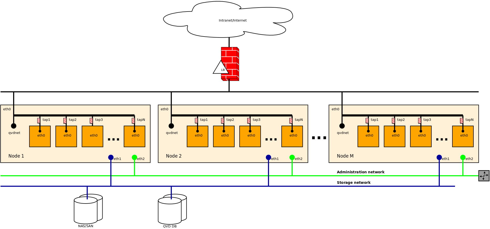

Nicolas Arenas
<nicolas.arenas@qindel.com>
version 1.0,
December 2010
QVD (Quality Virtual Desktop) is a Linux focused VDI (Virtual Desktop Infraestructure). What does it means?, that the Desktops delivered to the clients are Linux Desktops. These desktops are virtualized by kvm (Linux kernel virtual machine), and intends to be a fully integrated solution, what involves that all the components are fully integrated.
Desktop Virtualization is as its early ages and the necessity for companies to keep their data under control are growing including those in the desktops users. QVD is a product that are relying at user’s desktops.
QVD is written in perl and it runs such a proccess in a Linux OS. As the delivery protocol is Nx, the user desktop runs as a remote X11 session even acroos slow or low-bandwitch connections. It’s possible to run the client on Windows and Linux platforms or via Thin Clients.
QVD is composed by actors and components.
The QVD’s actors are
Users: People that works at their desks, using office packages, email, whatever. Must be identified by login and password. Virtual Machines: Running Linux Desktops and owned by the users. These VM’s runs under kvm on Linux Nodes. Nodes: Fisical servers where the VM’s run. Images: Templates with shared properties as applications installed, memory for the vm or space for the user’s home.
The QVD components are
QVD-Client: A piece of software that’s connects the user whith the virtual Machine. Able to push some user’s devices front the user physichal workstation through his virtual machines.
QVD-L7R: In charge to balance the connections from the QVD-Client to the Virtual Machines and the responsability for login user before they went into their Virtual Machines.
QVD-HKD: Responsible to interact with the Virtual Machines, starting, stopping, and update the VM’s status in the QVD Database.
QVD-Node: Daemon running at in the nodes, in charge to manage the QVD-L7R and the QVD-HKD.
QVD-Database: Holds the status for all users, Vitual Machines, images, hosts. All the platform information is holded by the database.
QVD-Administrative tools: Composed by CLI and the WAT (Web administration tool) that provides an easy and simple way to administrate the whole platform, from a couple of nodes to hundreds.
QVD-VMA: The agent that runs in the Virtual Machine, allowing users to connect, enable printer sharing, audio, hooks, etc.
QVD is a 3-tier solution from a Network perspective, the QVD-Client connects to the QVD-L7R and this connection is forwarded directly to the virtual machine. Each virtual machine has is own IP Address. Each Node has an firewall running that provides security to the Virtual Machines at bridge Level. All the virtual machines must be in the same subnet, at this moment a different farm must be created if two or more networks are required. A dhcp server runs in each host to provide the correct IP to each virtual Machine.

The NICs for each VM are tap intefaces. Those will be briged to a specific physichal NIC of the node. So the VMs will be at the same network that the nodes.
The bridge MUST exist before HKD is running and it MUST be created manually, by defaul the bridge’s name will be qvdnet0.
Tap interfaces will be created by HKD and for the kvm perspective they will be passed as file descriptor 3.
The IP address for each VM is fixed at the vm creation and cannot be modified after that. The assigantion is implemented at the QVD/Admin.pm. Each VM ask for his IP via DHCP, each node runs a DHCP server managed by the HKD that just assigns static IP address. The DHCP server is configured to assign IP to ALL the vm’s in the cluster, inluded those that run in another node or they are not in execution.
The HKD calculates the MAC address for each VM from the IP address that each VM has assigned, thus the IP address is A.B.C.D is ralated to MAC 54:52:00:B:C:D (with its corresponding hexadecimal conversion).
QVD uses two complementing firewalls, iptables and ebtables, the reason is have a firewall at bridge level ebtables and iptables at node level.
* ebtables INPUT -i $tap -j QVD_INPUT_$tap * ebtables FORWARD -i $tap -j QVD_FORWARD_$tap * ebtables QVD_FORWARD_$tap -s ! $mac -j DROP * ebtables QVD_INPUT_$tap -s ! $mac -j DROP * ebtables QVD_FORWARD_$tap -p 0x800 --ip-source ! $ip -j DROP * ebtables QVD_INPUT_$tap -p 0x800 --ip-protocol 17 --ip-source 0.0.0.0 --ip-destination-port = 67 -j ACCEPT * ebtables QVD_INPUT_$tap -p 0x800 --ip-source ! $ip -j DROP |
Version 1.0
Last updated 2010-12-09 13:57:00 CEST